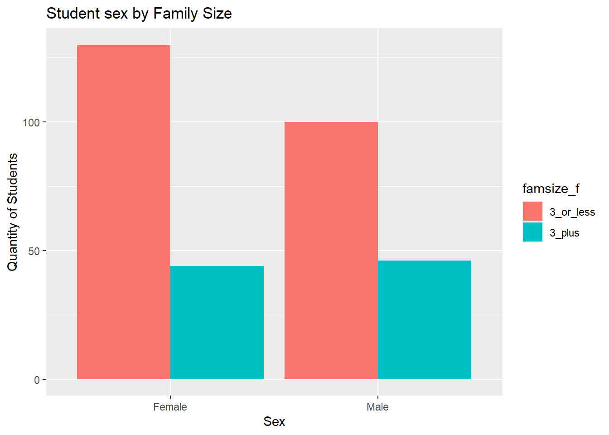
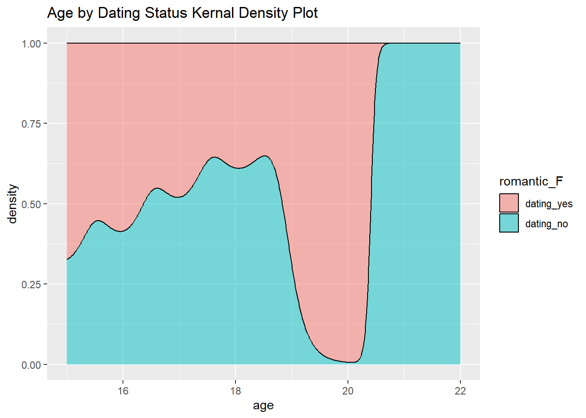

Reading in data using the provided R code with modifications
d1=read.table("student/student-mat.csv",sep=";",header=TRUE)d2=read.table("student/student-por.csv",sep=";",header=TRUE)d3=merge(d1,d2,by=c("school","sex","age","address","famsize","Pstatus","Medu","Fedu","Mjob","Fjob","reason","nursery","internet"))print(nrow(d3)) # 382 students
[1] 382
Step 2
Using functions from the tidyverse to repeat step 1 with tidyverse functions
library(tidyverse)
── Attaching core tidyverse packages ──────────────────────── tidyverse 2.0.0 ──
✔ dplyr 1.1.4 ✔ readr 2.1.5
✔ forcats 1.0.0 ✔ stringr 1.5.1
✔ ggplot2 3.5.1 ✔ tibble 3.2.1
✔ lubridate 1.9.3 ✔ tidyr 1.3.1
✔ purrr 1.0.2
── Conflicts ────────────────────────────────────────── tidyverse_conflicts() ──
✖ dplyr::filter() masks stats::filter()
✖ dplyr::lag() masks stats::lag()
ℹ Use the conflicted package (<http://conflicted.r-lib.org/>) to force all conflicts to become errors
data1 =read.csv2("student/student-mat.csv", header =TRUE)data2 =read.csv2("student/student-por.csv", header =TRUE)# turning data1 and data2 into tibblesdata1 <-as_tibble(data1)data2 <-as_tibble(data2)data3 <- data1 |>inner_join(data2, by =c("school","sex","age","address","famsize","Pstatus","Medu","Fedu","Mjob","Fjob","reason","nursery","internet"))
Warning in inner_join(data1, data2, by = c("school", "sex", "age", "address", : Detected an unexpected many-to-many relationship between `x` and `y`.
ℹ Row 79 of `x` matches multiple rows in `y`.
ℹ Row 79 of `y` matches multiple rows in `x`.
ℹ If a many-to-many relationship is expected, set `relationship =
"many-to-many"` to silence this warning.
When using inner_join the warning message “Detected an unexpected many-to-many relationship between x and y” appears. I am unsure if this need sto be addressed, as checking d3 against data3 shows that they have the same number of observations and variables. An error compared to the d3 data frame is that the varaibles nursery and internet appear to be out of order as they are stuck in the middle of the “x” variables.
An eaiser way to double check the data is to seperate the data out into two seperate tables by the x columns and the y columns
x_check <- data3 |>select(ends_with(".x"))y_check <- data3 |>select(ends_with(".y"))#Also checking the varaibles we grouped byby_check <- data3 |>select(!c(ends_with(".x"), ends_with(".y")))
We also need to check for NA values, so we are going to use the function seen in the EDA basics lecture
sum_na <-function(column){sum(is.na(column))}na_counts <- data3 |>summarise(across(everything(), sum_na)) #across() applies to every column while everything() is the specifierna_counts
Based off these results everything also appears normal as no NA’s were found, but when double checking against the variable list on the ULC machine learning repository some are listed as binary variables. These variables like “sex” may need to be converted to factors. Of course there is the case of repeating variables but that is fixed in step 3
Step 3
The next step we need to take is to do an inner_join() on all variables other than G1, G2, G3, paid, and absences.
Taking 4 categorical variables of for math data, Portuguese, and combined data and convert them into factors in each tibble. The four variables I want to look at our famsize, Pstatus, sex, and romantic. That way I can examine how family size, parents cohabitation status, romantic status, and gender impacts the data.
#renaming datasets for clarity and making sure they are tibblesmath_data <- data1por_data <- data2#Using function to make variables into factorsfactorizer <-function(tibble_data){ valid_cat_vars <-c("sex", "famsize", "Pstatus", "romantic") sex_lab <-c("Female", "Male") famsize_lab <-c("3_or_less", "3_plus") Pstatus_lab <-c("Together", "Apart") romantic_lab <-c("dating_yes", "dating_no")for(var incolnames(tibble_data)){if(var %in% valid_cat_vars){ tibble_data[[var]] <-as.factor(tibble_data[[var]]) } }#Creating labels for each variableif ("sex"%in%colnames(tibble_data)) { tibble_data <- tibble_data |>mutate(Sex_f =factor(sex, levels =c("F", "M"), labels =c("Female", "Male"))) }if ("famsize"%in%colnames(tibble_data)) { tibble_data <- tibble_data |>mutate(famsize_f =factor(famsize, labels = famsize_lab)) }if ("Pstatus"%in%colnames(tibble_data)) { tibble_data <- tibble_data |>mutate(Pstatus_F =factor(Pstatus, labels = Pstatus_lab)) }if ("romantic"%in%colnames(tibble_data)) { tibble_data <- tibble_data |>mutate(romantic_F =factor(romantic, labels = romantic_lab)) } }#running function to make variables into factorsmath_data <-factorizer(math_data)por_data <-factorizer(por_data) combo_data <-factorizer(combo_data)
Task 2: Summarize the Data
First step checking for how the data is stored in combo_data
Together, Female, 3_or_less: 12, which means roughly 4% of the students female with parents who co-habituated and had 3 or less family members
Sub-setting tables
# Using filter() to subset dataschool_filter_data <- combo_data |>filter(school =="GP")#creating two way tableschool_filter_table <-table(school_filter_data$romantic_F, school_filter_data$Sex_f)school_filter_table
Female Male
dating_yes 105 97
dating_no 48 37
#Creating three way table then subsetting it by family size 3_plussub_table <-table(combo_data$romantic_F, combo_data$Sex_f, combo_data$famsize_f)sub_table_3_plus <- sub_table[, , 2]sub_table_3_plus
`summarise()` has grouped output by 'Sex_f', 'famsize_f'. You can override
using the `.groups` argument.
count3_combo_data
# A tibble: 4 × 4
# Groups: Sex_f [2]
Sex_f Pstatus_F `3_or_less` `3_plus`
<fct> <fct> <int> <int>
1 Female Together 12 6
2 Female Apart 118 38
3 Male Together 4 9
4 Male Apart 96 37
count3_combo_data[1, 3]: 12, which means roughly 4% of the students female with parents who co-habituated and had 3 or less family members
Stacked bar graph and side-by-side bar graph
#creating bar graph of sex by family sizecombo_bar <-ggplot(combo_data, aes(x = Sex_f, fill = famsize_f)) +geom_bar() +labs(title ="Student sex by Family Size", x ="Sex", y ="Quantity of Students")combo_bar
#Creating side-by-side plotcombo_plot <-ggplot(combo_data, aes(x = Sex_f, fill = famsize_f)) +geom_bar(position ="dodge") +labs(title ="Student sex by Family Size", x ="Sex", y ="Quantity of Students")combo_plot

Numeric Variables (and across groups)
Center and spread of age, absences, grade variables
#creating a function to summarize mean, median, variance, standard deviation, and IQRnumeric_summary <-function(data, num_var ="age"){ data <- data |>summarize(across(num_var, .fns =list("mean"= mean, # This will create a named list with .fns"median"= median,"var"= var,"sd"= sd,"IQR"= IQR), .names ="{.fn}")) # .fn is function names}#Creating tibble of math data summarymath_age_summary <-numeric_summary(math_data, "age")
Warning: There was 1 warning in `summarize()`.
ℹ In argument: `across(...)`.
Caused by warning:
! Using an external vector in selections was deprecated in tidyselect 1.1.0.
ℹ Please use `all_of()` or `any_of()` instead.
# Was:
data %>% select(num_var)
# Now:
data %>% select(all_of(num_var))
See <https://tidyselect.r-lib.org/reference/faq-external-vector.html>.
#Repeating this process while subsetting the data for all schools to only include MS school for the math dataMS_only_data <- math_data |>filter(school =="MS")MS_only_data
# A tibble: 46 × 37
school sex age address famsize Pstatus Medu Fedu Mjob Fjob reason
<chr> <fct> <int> <chr> <fct> <fct> <int> <int> <chr> <chr> <chr>
1 MS M 18 R GT3 T 3 2 other other course
2 MS M 19 R GT3 T 1 1 other servi… home
3 MS M 17 U GT3 T 3 3 health other course
4 MS M 18 U LE3 T 1 3 at_home servi… course
5 MS M 19 R GT3 T 1 1 other other home
6 MS M 17 R GT3 T 4 3 services other home
7 MS F 18 U GT3 T 3 3 services servi… course
8 MS F 17 R GT3 T 4 4 teacher servi… other
9 MS F 17 U LE3 A 3 2 services other reput…
10 MS M 18 U LE3 T 1 1 other servi… home
# ℹ 36 more rows
# ℹ 26 more variables: guardian <chr>, traveltime <int>, studytime <int>,
# failures <int>, schoolsup <chr>, famsup <chr>, paid <chr>,
# activities <chr>, nursery <chr>, higher <chr>, internet <chr>,
# romantic <fct>, famrel <int>, freetime <int>, goout <int>, Dalc <int>,
# Walc <int>, health <int>, absences <int>, G1 <int>, G2 <int>, G3 <int>,
# Sex_f <fct>, famsize_f <fct>, Pstatus_F <fct>, romantic_F <fct>
#Running data through numeric functionMS_age_summary <-numeric_summary(MS_only_data, "age")MS_abscenses_summary <-numeric_summary(MS_only_data, "absences")MS_G1_summary <-numeric_summary(MS_only_data, "G1")MS_G2_summary <-numeric_summary(MS_only_data, "G2")MS_G3_summary <-numeric_summary(MS_only_data, "G3")#combining rows to get tibble of all summary dataMS_summary <-bind_rows("age"= MS_age_summary, "abscenses"= MS_abscenses_summary, "G1"= MS_G1_summary, "G2"= MS_G2_summary, "G3"= MS_G3_summary, .id ="RowName")MS_summary
Looking at the data it appears that the mean scores from G1 to G3 decreased in the math group while they increased in the Portuguese group, while the median scores stayed roughly the same only changing to 12 for G3 in the Portuguese data. Ages between the two data sets were also similar having identical medians and near identical means (16.69 for math, 16.74 for Portuguese). One variable that did show a large degree of variance was absences with the math data having a much higher mean and median as well as a higher variance, sd, and IQR. In both groups the mean was higher than the median, this alongside with the high IQR (8 and 6 respectively) indicates that a small number of highly absent students may be skewing the data.
When I filtered the data to only include the MS school in the math data, I found that the mean and median age was much higher at about 18 for the mean and median. Additionally, the mean and median test scores for G1 and G3 were lower than the overall math data mean and median scores.
Measures of center and spread when absences are less than 4
#grouping data functiongrouped_numeric_summary <-function(data, num_var ="age"){ data <- data |>filter(absences <4) |>summarize(across(num_var, .fns =list("mean"= mean, # This will create a named list with .fns"median"= median,"var"= var,"sd"= sd,"IQR"= IQR), .names ="{.fn}_{.col}")) # .fn is function names}#summaries for math datasub_math_age <-grouped_numeric_summary(math_data, "age")sub_math_age
Looking at the data after sub-setting it interestingly shows you that when comparing the sub_math_G3 table to the math_G3_summary that when you filter out students who had more than 4 absences that the mean grades the less than 4 absences group has a lower mean than than when you include all students.
#Mean for sub_math_G3sub_math_G3$mean_G3
[1] 9.82199
#Mean for math_G3_summarymath_G3_summary$mean
[1] 10.41519
Finding measures of center and spread across a single grouping variable
#Finding measures of center and spread across SEX using new functionsex_numeric_summary <-function(data, num_var ="age"){ data |>group_by(sex) |>summarize(across(num_var, .fns =list("mean"= mean, # This will create a named list with .fns"median"= median,"var"= var,"sd"= sd,"IQR"= IQR), .names ="{.fn}_{.col}")) # .fn is function names} #summaries for math datasex_math_age <-sex_numeric_summary(math_data, "age")sex_math_age
# A tibble: 2 × 6
sex mean_age median_age var_age sd_age IQR_age
<fct> <dbl> <dbl> <dbl> <dbl> <dbl>
1 F 16.7 17 1.44 1.20 2
2 M 16.7 16 1.84 1.36 2
# A tibble: 2 × 6
sex mean_G3 median_G3 var_G3 sd_G3 IQR_G3
<fct> <dbl> <dbl> <dbl> <dbl> <dbl>
1 F 12.3 12 9.76 3.12 4
2 M 11.4 11 11.0 3.32 3
Now we can see each summary statistic based off the female or male portion of the students, for instance the the mean ages between females and males for both the math_data and por_data are quite close (por: F = 16.78, M = 16.68) (math: F = 16.73, M = 16.65). We can also see that for mean absences the data is quite close for both math_data (F = 6.21, M = 5.14) and por_data (F = 3.55, M = 3.77). In the math_data it can be seen the the variance (F = 89.22, M = 35.76) and Standard deviation (F = 9.44, M = 5.98) are much higher for female students while the medians are the same for both sexes (4). For G3 scores it can be seen that the mean (F = 9.96, M = 10.91) and median scores (F = 10, M = 11) are higher for male students for the math_data and this trend is reversed in the por_data, means (F = 12.25, M = 11.4) and median (F = 12, M =11).
Finding measures of spread across Sex and family size
#Finding measures of center and spread across SEX and family size using new functiondub_numeric_summary <-function(data, num_var ="age"){ data |>group_by(Sex_f, famsize_f ) |>summarize(across(num_var, .fns =list("mean"= mean, # This will create a named list with .fns"median"= median,"var"= var,"sd"= sd,"IQR"= IQR), .names ="{.fn}_{.col}")) # .fn is function names} #summaries for math datadub_math_age <-dub_numeric_summary(math_data, "age")
`summarise()` has grouped output by 'Sex_f'. You can override using the
`.groups` argument.
One thing of interest I was able to find from this was that male students with a family size of 3 or less had the lowest mean G3 Portuguese scores by a large margin with the nearest mean G3 score being 11.96 for males with a family size greater than 3. The opposite trend is found when looking at mean G3 math scores, in this case female students with a family size of 3 or less had the lowest mean scores by over a point at 9.63.
Creating a correlation between all numeric variables
#Creating function to replicate process across datasetscorrelation_summary <-function(data, cor_var ="absences"){ data <- data |>select(age, absences, G1, G2, G3 ) |>summarize(across(where(is.numeric), .fns =list("correlation"=~cor(.x, data[[cor_var]])), .names ="{cor_var}_{.fn}_{col}")) return(as.matrix(data))}#Running function for each variablecor_age_math <-correlation_summary(math_data)cor_abs_math <-correlation_summary(math_data, "age")cor_G1_math <-correlation_summary(math_data, "G1")cor_G2_math <-correlation_summary(math_data, "G2")cor_G3_math <-correlation_summary(math_data, "G3")#combining them into one matrixcor_math_matrix <-rbind(cor_abs_math, cor_age_math, cor_G1_math, cor_G2_math, cor_G3_math)#renaming the rows so it makes sensecolnames(cor_math_matrix) <-c("age", "absences", "G1", "G2", "G3")rownames(cor_math_matrix) <-c("age", "absences", "G1", "G2", "G3")cor_math_matrix
#Repeating for portugeuse datacor_age_por <-correlation_summary(por_data)cor_abs_por <-correlation_summary(por_data, "age")cor_G1_por <-correlation_summary(por_data, "G1")cor_G2_por <-correlation_summary(por_data, "G2")cor_G3_por <-correlation_summary(por_data, "G3")#combining them into one matrixcor_por_matrix <-rbind(cor_abs_por, cor_age_por, cor_G1_por, cor_G2_por, cor_G3_por)#renaming the rows so it makes sensecolnames(cor_por_matrix) <-c("age", "absences", "G1", "G2", "G3")rownames(cor_por_matrix) <-c("age", "absences", "G1", "G2", "G3")cor_por_matrix
From this data we can find that age has a weak negative correlation with G1 to G3 test scores for both the math and Portuguese scores. Absences also have a weak negative correlation, but interestingly this is not true for G3 math scores with there being an almost non-existent positive correlation of 0.03.
Creating a histogram, kernel density plot, and box plot for age & G3 grouped by dating status
Note: I realized I probably was supposed to be doing this data for the combined data set, so I am going to do that from here on out. I would go back and change my code but all I would be doing is switching out the data sets, I got confused by the wording that said the numeric variables for math and Portuguese data on the instructions.
#histogram for age by dating statusromance_age_histo <-ggplot(combo_data, aes(x = age, fill = romantic_F)) +geom_histogram(binwidth =1, alpha =0.5, position ="identity") +labs(title ="Age by Dating Status Histogram")#histogram for G3 by dating statusromance_G3_histo <-ggplot(combo_data, aes(x = G3, fill = romantic_F)) +geom_histogram(binwidth =1, alpha =0.5, position ="identity") +theme_light() +labs(title ="G3 by Dating Status Histogram")#kernal plot for age by dating statusromance_age_kernal <-ggplot(combo_data, aes(x = age, fill = romantic_F)) +geom_density(alpha =0.5, position ="fill") +labs(title ="Age by Dating Status Kernal Density Plot")#kernal plot for G3 by dating statusromance_G3_kernal <-ggplot(combo_data, aes(x = G3, fill = romantic_F)) +geom_density(alpha =0.5, position ="fill") +theme_light() +labs(title ="G3 by Dating Status Kernal Density Plot")#boxplot for age by dating statusromance_age_box <-ggplot(combo_data) +geom_boxplot(aes(x = romantic_F, y = age, fill = romantic_F)) +labs(title ="Age by Dating Status Box Plot")#boxplot for G3 by dating statusromance_G3_box <-ggplot(combo_data) +geom_boxplot(aes(x = romantic_F, y = G3, fill = romantic_F)) +theme_light() +labs(title ="G3 by Dating Status Box Plot")#printing plots romance_age_histo
romance_G3_histo
romance_age_kernal

romance_G3_kernal
romance_age_box
romance_G3_box
Based off the data we were able to find a couple things that stand out, the first one being that when looking at age by dating status histogram you can see that younger students were more likely to be dating than not dating, but as they got closer to the age of 18 this difference started to decrease.This is also backed up by the age by dating status box plot which shows that the mean age of non-daters is higher than the mean age for students who are dating.
Creating scatter plots that compare G3 to another numerical variable grouped by sex
#plotting G3 by age g3_age_scatter <-ggplot(combo_data, aes(x = age, y = G3, color = Sex_f)) +geom_point(position ="jitter") +labs(title ="Age by G3 Scatter Plot", color ="Sex")g3_age_scatter
#plotting G3 by absencesg3_abs_scatter <-ggplot(combo_data, aes(x = absences, y = G3, color = Sex_f)) +geom_point(position ="jitter") +labs(title ="Absences by G3 Scatter Plot", color ="Sex")g3_abs_scatter
Repeating plots with faceting
#plotting G3 by age with sexg3_age_face <- g3_age_scatter +geom_point() +facet_wrap(~ Sex_f)g3_age_face
#plotting G3 by age with sex and dating statusg3_age_face2 <- g3_age_scatter +geom_point() +geom_smooth(method = lm) +#adding for funfacet_grid(romantic_F ~ Sex_f)g3_age_face2
`geom_smooth()` using formula = 'y ~ x'
Everything is now complete for our exploratory analysis. The final bit of interest was that when looking at the trend line for age by G3 grouped by sex and dating status, was that the male students who were dating showed the sharpest decrease in their trend line for test scores as age increased.